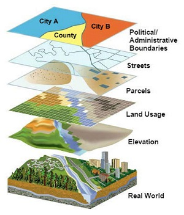
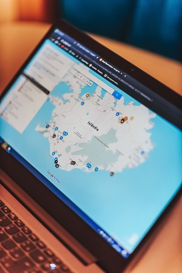

GIS - co to?
Geographic Information System (GIS, pol. system przetwarzania informacji geograficznej) to potężne narzędzie, które umożliwia gromadzenie, analizę, przetwarzanie i wizualizację danych geoprzestrzennych. Działa na zasadzie zbierania informacji o miejscach i zjawiskach na powierzchni Ziemi, a następnie przetwarzania ich w formie map i raportów.

Zastosowania GIS
GIS znajduje zastosowanie w wielu dziedzinach
- Planowanie przestrzenne - wykorzystywane w urbanizacji, gospodarce leśnej, gospodarce wodnej, przy budowie dróg, itd.
- Zarządzanie danymi geoprzestrzennymi - gromadzenie i analiza danych geograficznych.
- Analiza zjawisk atmosferycznych - monitorowanie i prognozy warunków meterologicznych, także wpieranie zarządzania kryzysowego w czasie katastrof naturalnych.
- Ochrona środowiska - monitorowanie zanieczyszczeń i innych zagrożeń dla ekosystemu.
Możliwości GIS
Oto niektóre z tych możliwości
- Tworzenie interaktywnych map z danymi geoprzestrzennymi (Google Maps, OpenStreetMap, Flightradar24, itp.).
- Wizualizacja danych za pomocą różnych warstw i symboli na mapach.
- Analiza przestrzenna, identyfikacja wzorców i trendów w danych geograficznych.
- Różnego rodzaju raporty i prezentacje, oparte na danych geoprzestrzennych.
- Klasyfikacja obiektów geograficznych (także przez AI sztuczną inteligencję)
- Reagowanie na katastrofy natyralne i inne sytuacje kryzysowe, możliwe w czasie rzeczywistym.
